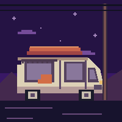

Фритрек и нулевой спринт: Подготовка к работе

</HTML>Это было самое начало пути. На этом этапе важно было проникнуться основами и настроиться на учёбу. И, возможно, подумать, как новые знания могут повлиять на ваше будущее.
Первый шаг — разобраться, как устроена страница и как браузер превращает разметку в изображение.